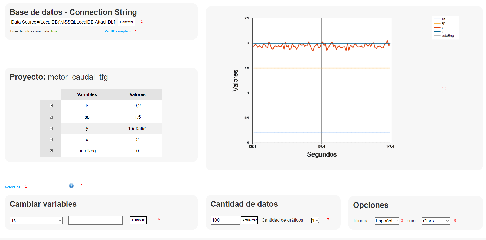

Main page field

- Connection String for the data base connection.
- Link to all tables of the project database.
- Project variables in real time. The controls allow you to indicate which ones will be shown in the graph on the right (10).
- Link to the "About" information.
- Button to display the help page.
- Field for changing the variables. In the drop-down menu the variable to be edited will be selected and in the right text the new value that it will take.
- Amount of data to display in the graphs and number of graphs to display.
- Language change menu.
- Visual theme change menu.
- Section where the main graph is shown with the variables marked in the table on the left.
Homepage